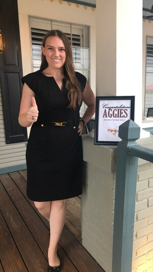
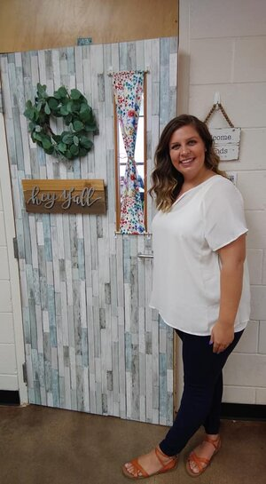

Chair: Mikaela Rhodes swdaachair@gmail.com
Mikaela Rhodes was initiated into the Psi Chapter at the
University of Arkansas in Fall 2012. Mikaela served as the
Recording Secretary for the 2013-2015 terms and Treasurer for the
2015-2016 term during her undergraduate career. She graduated in
May 2016 with degrees in International Relations and German. She
then went on an adventure to Neumünster, Germany as a Fulbright
English Teaching Assistant for a year. She taught German children
about American culture and politics and had the joy of riding a
bike every day to school. She completed her master’s degree in
International Affairs in May 2019. In her free time, she likes
reading, rock climbing, kickboxing, and playing with her cat.
Contact Mikaela at swdaachair@gmail.com. You can link up with her
on Facebook, Instagram, or LinkedIn.
Membership Director: Evelyn Jones swdaamembership@gmail.com
Evelyn (Eve) Jones was initiated to the Beta Nu Chapter of Tau
Beta Sigma at Arkansas Tech University in the spring of 2015. She
first graduated in 2012 with a Bachelor’s of Science in
Professional Studies. After returning to Arkansas Tech in 2013,
she graduated with her second Bachelor's of Science degree in
Early Childhood Education in 2017. As an active member, she served
1 year as Historian and was a part of several committees. She
currently works in Arkansas at Paris Elementary School as a First
Grade teacher. While in college, she was also a member of Sigma
Alpha Iota serving on the executive board as Vice President of
Membership (2 years) and Sergeant of Arms. She is married with 3
beautiful children and 4 fur babies. She has been married for
almost 10 years but they have been together for 15 years. Her
children are Alex age 6, Arianna age 4, and Julianna age 2. Of her
fur babies, she has 2 cats named Poncho and Simba and 2 dogs named
McGee and Sheara. She loves being with her family/friends and
working with children. Miniature, long-haired weenie dogs are her
favorite breed of dog. She is a huge Disney and Star Wars fan. She
also collects shot glasses of places and states that she has been
to. In her free time, she enjoys reading, playing video games,
watching tv, 4-wheeling, making music, playing softball and
basketball with her kids and archery. Contact Eve at
swdaamembership@gmail.com. You can also link up with her on
Facebook, Instagram or Snapchat.

Programs Director: Hannah Wells swdaaprograms@gmail.com
Hannah Wells was initiated into the Psi chapter of Tau Beta Sigma
at the University of Arkansas in the Spring of 2014. As an active,
Hannah served as Psi's Vice President of Philanthropy and Ritual
Chair. She also served as the SWD Vice President of Special
Projects for the 2016-2017 term. She graduated in August of 2017
with a Bachelor of Science in Educational Studies. She moved back
home to Oklahoma City, Oklahoma to be closer to her family and got
a job teaching at Tulakes Elementary School in Putnam City
District. She taught 2nd grade for 2 years and now teaches 4th
grade. In the summertime, Hannah works for a local day camp that
she has been at for 6 years now, as well as volunteers for a
respite care program monthly as she has for 16 years. In her
limited free time, Hannah enjoys the outdoors (aka swimming and
tanning), playing board games, spending time with her family, and
watching Friends while attempting to cuddle with her cat, Pheebo.
Communciations Director: Connor Terry swdjoinalumni@gmail.com
Connor Terry was initiated into the Alpha Chapter of Kappa Kappa
Psi at Oklahoma State University in Spring of 2013. During his
time as an active member, he served as the Alumni Relations
officer for 3 years and as the Co-Member at Large for the
Southwest District during the 2015-2016 school year. In May 2016
he graduated with a Bachelor’s of Arts in Psychology and a minor
in Sociology, and later earned his Master’s degree in Educational
Leadership Studies with an option in College Student Development
in May 2019. He currently works at his alma mater (OSU) as an
Academic Advisor within the Chesapeake Energy Business Student
Success Center, but in his free time he runs social media for
other organizations, co-hosts and edits a podcast, and spends a
lot of time at the Disney parks. You can catch him on Facebook,
Twitter, or LinkedIn.
Finance Director: Ross Fondren swdaafinance@gmail.com
Ross Fondren was initiated into the Lambda chapter of Kappa Kappa
Psi at the University of Arkansas in Fall 2009. Ross served as the
chapter’s Corresponding & Alumni Secretary in 2012-2013 and as
Ritual Chair during 2013-14. He also represented the chapter at
multiple district and national conventions. He graduated in May
2014 with a B.A. Music. Ross became a Life Member of Kappa Kappa
Psi in Fall 2018. Ross currently works at his local UPS (United
Parcel Service,) as an assistant manager for both On-Road and
Preload Operations. When he is not working early hours or focused
on SWDAA duties, Ross enjoys spending time with his dog, Arwen,
running or biking, and refereeing soccer. You can email Ross at
swddaafinance@gmail.com or connect via Facebook, Instagram, and
Twitter.
KKPsi Member At Large: Bradley Hammett swdaakkymal@gmail.com
Bradley was initiated into the Zeta Xi chapter of Kappa Kappa Psi
at Tyler Junior College in Tyler, Texas in the Fall of 2011. He
served as the chapter secretary/treasurer for the 2012-2013 school
year while active, and then became a life member of Kappa Kappa
Psi in August of 2016. After finishing an AAS degree in Emergency
Medical Services, he began working at UT Health East Texas EMS
(formerly ETMC EMS) where he works today as a paramedic on a 911
ambulance. As an alumni, he has worked with the SWDAA on the
membership committee, and assisted with arranging local alumni
social events. In his off time, Bradley enjoys hiking, riding
bicycle trails, and playing tennis. Bradley also created the Kappa
Kappa Psi - Meeting Grounds Facebook page that thousands of
brothers use for networking, knowledge sharing, and fellowship. If
you would like to reach out, he can be reached at
swdaakkymal@gmail.com, or connect on Facebook or Instagram.
TBS Member At Large: Katelyn Zimmer swdaatbsmal@gmail.com
Katelyn Zimmer was initiated in the Delta Upsilon chapter of Tau
Beta Sigma at Howard Payne University in the spring of 2016.
During her time as an active, she served as Treasurer and
Recording Secretary. Katelyn received her Bachelor of Music in May
2019, then moved out west to Odessa, TX where she teaches
elementary music. Outside of teaching, she is involved with a
Symphony Chorale and a local community band. During her free time,
she likes to read, hang out with her two cats (Skaaro and Arya),
and journal. Contact Katelyn at swdaatbsmal@gmail.com. You can
also reach her on Facebook, Instagram, LinkedIn, and Twitter.